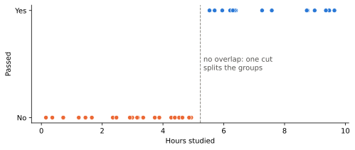
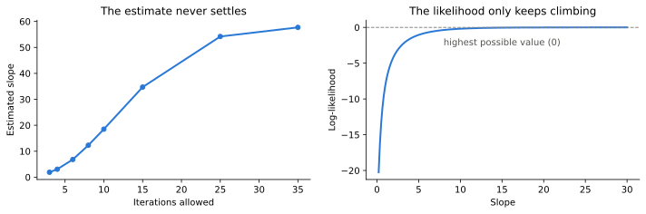
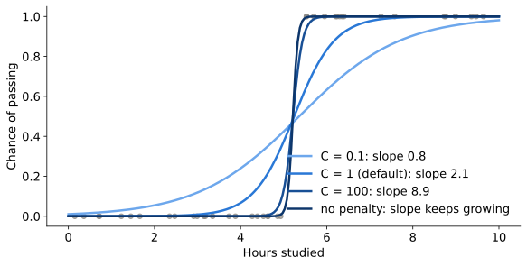

Carter Morissette, Statistical Data Science major and Economics minor at UConn (graduating May 2027)
Experience: research and data analyst at UConn’s Industrial Assessment Center, running energy audits; sports statistics internship with UConn Baseball (Fall 2026)
Why this topic: I started with logistic regression, and decided to study specifically where it breaks: perfect separation. I plan to model NBA win probability for my final project, which is a yes/no outcome, so I wanted to know how logistic regression can fail.
Motivation
Separation breaks the usual fitting method (maximum likelihood) and the tests built on it.
It does not mean the predictor is useless. Here, the predictor gets every outcome right.
Warning signs: huge coefficients, enormous standard errors, or a convergence warning.
It tends to appear with small samples, rare outcomes, or a category where every row has the same outcome.
So we need to know why it happens and how to fix it.
Main idea
Logistic regression predicts a yes/no outcome from numbers.
Example: hours studied predicts pass or fail.
It gives a probability, like “80% chance of passing”.
Every student who failed (0) studied less than every student who passed (1).
What it looks like

Passing is fully determined by hours studied.
Any cutoff between 4.93 and 5.53 hours is a perfect classifier.
Interpretation
import warningsimport statsmodels.api as smX = sm.add_constant(df[["hours"]])with warnings.catch_warnings(record=True) as caught: warnings.simplefilter("always") fit = sm.Logit(df["passed"], X).fit(disp=False)
We record the warnings instead of hiding them. They are part of the lesson.
The output
==============================================================================
coef std err z P>|z| [0.025 0.975]
------------------------------------------------------------------------------
const -301.4093 5.91e+04 -0.005 0.996 -1.16e+05 1.16e+05
hours 57.7061 1.13e+04 0.005 0.996 -2.21e+04 2.22e+04
==============================================================================
Training accuracy: 1.0
Converged: False
ConvergenceWarning: Maximum Likelihood optimization failed to converge. Check mle_retvals
In plain English: every answer is right, but the model never finished its math.
Reading the output
Slope (57.7): each extra hour would multiply the odds of passing by about \(10^{25}\). Not believable.
Std err (11,318) and 95% interval (-22,125 to 22,241): the usual Wald calculations are unreliable under separation.
p = 0.996: this is not evidence that hours has no effect. The Wald test breaks down here.
The optimizer stopped at 57.7. That is not a finite best estimate.
In plain English: any cutoff between 4.93 and 5.53 hours works, so the printed 5.2 is arbitrary. Do not trust the cutoff, slope, interval, or p-value.
Why it fails

Left: the estimate keeps growing as more iterations are allowed. Right: the log-likelihood along the path with intercept \(-b \times \mathrm{gap}\), not a profile likelihood.
In plain English: the model’s “best” slope keeps growing, so the number it prints just depends on when it gave up.
Spotting separation
Warnings: a ConvergenceWarning, or Converged: False.
Huge coefficients, standard errors in the thousands, p-values near 1.
Perfect (or nearly perfect) accuracy on the training data.
For a category, a zero cell in pd.crosstab(predictor, outcome).
Fixes
Fix 1: add a penalty. It puts a price on steep curves.
scikit-learn’s default is a ridge (L2) penalty on the slope.
C is the inverse of the penalty strength. Smaller C means a flatter curve.
Pick C by validation when predicting. The cost: the slope is pulled toward zero.

Firth’s method
Ridge and Firth both penalize the fitting objective, differently.
Heinze and Schemper (2002): finite estimates, profile intervals.
Python: firthmodels (not in our shared environment, so no demo).
Merge categories
Fix 2: merge sparse categories. Group D had no failures.
Study group
A
B
C
D
Passed
3
6
10
15
Failed
12
9
5
0
Problem: D’s effect vs group A is 25.6, std err 47,150.
Fix: pool C and D. The effect becomes 3.0, std err 0.8.
Caution: this compares C and D together with A, not D with A. It is not a corrected estimate of the same effect. Merge for real reasons, not just to remove a zero.
Limitations
A penalty pulls the slope toward zero, and the answer depends on the C you pick.
After a penalty, the usual std errors and p-values no longer mean what they normally do.
Merging groups changes the question you answer. Pick groups that make sense in real life, not ones that just fix the numbers.
With small samples, separation can happen by chance.
In plain English: every fix changes the answer a little, so say what you changed and why.
Takeaways
Separation breaks estimation and inference, not necessarily prediction. Huge std errors and p-values near 1 are warning signs.
Under separation, the printed slope is just where the optimizer stopped. Do not interpret it.
Fix it with a penalty, Firth’s method, or merged categories, and say what the fix costs.
In plain English: too perfect plus huge uncertainty means the usual estimates and tests are broken. Fix it, and say what the fix cost.
AI-use disclosure
Tool: Claude (Anthropic).
Assistance: planning slide structure, improving slide wording, debugging the Python code and figures, pre-submission review.
Responsibility: I ran the code, checked the output, interpreted it and take responsibility for the final content and citations.
References
Data: both examples are simulated, not real. Hours studied is built on the Worked example slide, and the study groups are built in the code behind the Merge categories slide.
Albert, A., and J. A. Anderson. 1984. “On the Existence of Maximum Likelihood Estimates in Logistic Regression Models.”Biometrika 71 (1): 1–10. https://doi.org/10.1093/biomet/71.1.1.
Heinze, Georg, and Michael Schemper. 2002. “A Solution to the Problem of Separation in Logistic Regression.”Statistics in Medicine 21 (16): 2409–19. https://doi.org/10.1002/sim.1047.